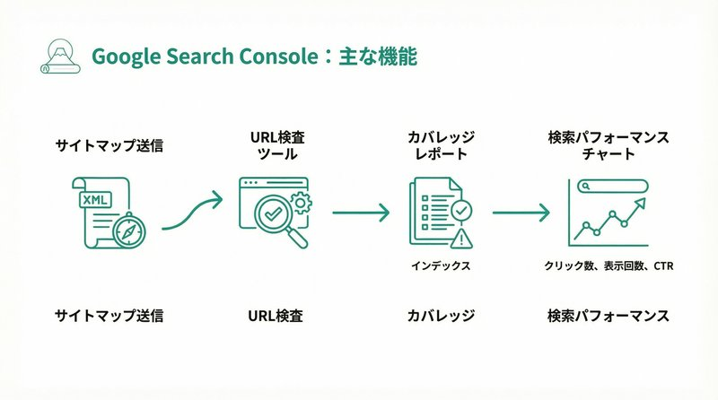

Googleサーチコンソール、導入したけど正直よくわからない…。数字がたくさん並んでいて、どこを見ればいいのか迷っていませんか？
埼玉県戸田市でWeb制作と保守運用サポートをしているミアキスの代表です。お客様から「サーチコンソールって何を見ればいいんですか？」という質問をよくいただきます。
実際、サーチコンソールは無料なのに、有料ツール並みに高機能。しかも、サイトの健康状態を把握するには欠かせないツールなんです。この記事では、初心者の方でも今日から使える基本的なチェック方法と、実際にミアキスが運用現場で見ているポイントを本音でお伝えします。
Googleサーチコンソールとは？
Googleサーチコンソール（旧ウェブマスターツール）は、Googleが無料で提供しているサイト管理ツールです。自分のサイトがGoogle検索でどう評価されているか、どんな問題があるかを教えてくれます。
よく「アナリティクスと何が違うの？」と聞かれますが、役割が違います。
- Googleアナリティクス：サイトに訪問した「後」の行動を分析
- サーチコンソール：サイトに訪問する「前」の検索状況を分析
つまり、サーチコンソールは「人が来る前の入口」を見るツール。どんなキーワードで検索されているか、検索結果に表示されているのにクリックされていないのはなぜか、といった「Google検索との関係」を知ることができます。
サーチコンソールで必ずチェックすべき4つのポイント
サーチコンソールには様々な機能がありますが、まず見るべきは以下の4つです。
1. 検索パフォーマンス（一番重要）
どんなキーワードで検索されているか、何回表示されて何回クリックされたかがわかります。
ミアキスで実際に見ているのはこの3つの数値です：
- 合計クリック数：サイトへの訪問数。増えていれば順調
- 合計表示回数：検索結果に表示された回数。表示されているのにクリックされていない場合は、タイトルや説明文の改善が必要
- 平均CTR（クリック率）：表示回数に対してどれくらいクリックされたか。業種にもよりますが、3〜5%が平均的
例えば、埼玉県内の製造業のお客様で「表示回数は多いのにクリック率が1%台」というケースがありました。タイトルを「〇〇製造｜埼玉」から「精密部品加工なら埼玉の〇〇製造｜短納期対応」に変更したところ、CTRが1.8%→4.2%に改善した実例があります。
2. カバレッジ（インデックス状況）
サイトのページがGoogleに正しく登録されているかを確認できます。
ここで「エラー」や「警告」が出ていたら要注意。例えば：
- 404エラー：存在しないページへのリンクがある
- noindexタグ：検索結果に表示させない設定になっている
- クロールエラー：Googleがページを読み込めない
実際、埼玉県内の不動産会社様で、重要な物件ページが全て「noindex」になっていて検索結果に出ていなかった、というケースもありました。制作会社が開発中の設定を本番環境でも残していたんですね。こういったミスもサーチコンソールで発見できます。
3. エクスペリエンス（モバイルユーザビリティ）
スマホでちゃんと見られるかをチェックする項目です。
2026年現在、検索ユーザーの約75%がスマホからアクセスしています。スマホ対応できていないと、検索順位にも悪影響があります。
よくあるエラー：
- テキストが小さすぎて読めない
- タップ要素（ボタンやリンク）が近すぎて押しにくい
- 画面からコンテンツがはみ出している
埼玉県戸田市内の飲食店様で、「スマホからの予約が少ない」という相談がありました。調べてみると、予約ボタンが小さすぎて押せない状態だったんです。サーチコンソールのモバイルユーザビリティで問題が指摘されていました。ボタンサイズを修正したところ、翌月の予約数が1.6倍に増えました。
4. セキュリティと手動による対策
サイトがハッキングされていないか、Googleからペナルティを受けていないかを確認する項目です。
通常は何も表示されませんが、もし警告が出たらすぐに対処が必要です。特に「マルウェア検出」「ハッキングされたコンテンツ」などの警告が出たら、専門家に相談してください。
実際、WordPressの更新を1年以上放置していた企業様で、サイトが改ざんされてスパムサイトへのリンクが埋め込まれていたケースもあります。サーチコンソールで警告が出たおかげで、被害拡大前に発見できました。
サーチコンソールを見る頻度は？
「毎日チェックしなきゃダメですか？」とよく聞かれますが、週に1回、5分だけで十分です。
ミアキスでは、月額保守プランのお客様に対して、毎週月曜日にサーチコンソールをチェックして、問題があればすぐにご連絡しています。数値の変化は週単位で見るほうが傾向がわかりやすいです。
ただし、以下の場合はすぐに確認してください：
- サイトをリニューアルした直後
- URLを変更した後
- サイトの表示速度が急に遅くなった時
- 検索順位が急落した時
サーチコンソールを放置するとどうなる？
サーチコンソールを見ていないと、気づかないうちにサイトが検索結果から消えている可能性があります。
実際にあった事例：
- ドメイン更新忘れ：サイトが消えているのに2週間気づかず、その間の問い合わせがゼロに
- SSL証明書の期限切れ：「このサイトは安全ではありません」という警告が表示され、新規訪問者が激減
- 404エラーの放置：重要なページが削除されたまま1ヶ月以上放置され、検索順位が20位→圏外に
これらは全て、サーチコンソールをチェックしていれば事前に防げたトラブルです。
初心者がやりがちな間違い
サーチコンソールを使い始めた方が、よくやってしまう間違いがあります。
1. 「エラー」を全部直そうとする
実は、エラーの中には直さなくても良いものもあります。例えば、意図的に検索結果に載せたくないページ（テストページや会員限定ページ）が「noindex」でエラー扱いされることがありますが、これは正常な状態です。
2. 数値の一時的な変動で焦る
検索順位や表示回数は、日々変動するのが普通です。1日だけ数値が下がっても焦らず、1週間〜1ヶ月のトレンドで見てください。
3. データを見るだけで改善しない
サーチコンソールは「問題を見つけるツール」であって、自動で直してくれるわけではありません。問題を見つけたら、改善アクションを取ることが大切です。
サーチコンソール活用の実例（埼玉県内の企業様）
最後に、ミアキスで実際にサーチコンソールを活用して成果が出た事例をご紹介します。
【事例1】埼玉県内の建設会社様
「〇〇工事 埼玉」で5位に表示されているのに、クリック率が2.1%しかありませんでした。競合他社のタイトルを調べたところ、「見積無料」「即日対応」などの具体的なメリットが書かれていることに気づきました。
タイトルを変更した結果：
クリック率 2.1% → 5.8%（約2.8倍）
月間問い合わせ 4件 → 11件
【事例2】戸田市内の歯科医院様
カバレッジで「クロールエラー」が50件以上出ていました。調べてみると、ブログ記事の古いURLがリンク切れになっていました。リダイレクト設定を行い、エラーを解消した結果、検索順位が全体的に2〜3位改善しました。
まとめ：サーチコンソールは「サイトの健康診断」
サーチコンソールは、サイトの健康状態を教えてくれる無料の診断ツールです。
最低限、以下の4つをチェックしてください：
- 検索パフォーマンス：クリック数、表示回数、CTRを確認
- カバレッジ：エラーや警告がないかチェック
- モバイルユーザビリティ：スマホで問題なく表示されるか確認
- セキュリティ：ハッキングやペナルティがないか確認
週に1回、5分のチェックで、大きなトラブルを未然に防ぐことができます。
もし「自分で見る時間がない」「エラーの対処方法がわからない」という場合は、ミアキスのようなWeb保守サービスを利用するのも一つの方法です。埼玉県戸田市を中心に、サーチコンソールの定期チェックからトラブル対応まで、月額1万円台から対応しています。
サイトを作って終わりではなく、定期的な健康チェックと改善で、検索からの集客を最大化しましょう。